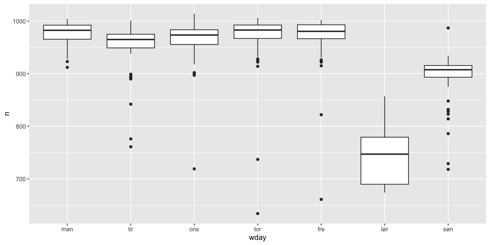
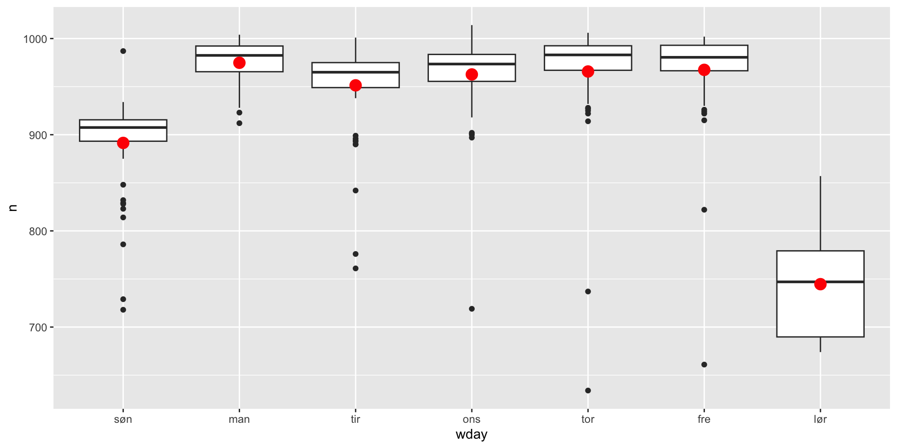

Model building
ag
Code
# create a bib file for the R packages
# used in this document
# Note! Needs to do a touch ag_model_building.bib in terminal before first run
# else stops when bibliography: "ag_model_building.bib" not found in YAML
knitr::write_bib(
c(
"tidyverse",
"modelr",
"nycflights13",
"lubridate",
"tseries",
"patchwork",
"hexbin"
),
file = "ag_model_building.bib"
)Introduction
- Will look at two models
- Diamonds (data in ggplot2)
- NYCflights13 (data in nycflights13) also needs lubridate
- Will follow r4ds
Diamonds
- In the dataset diamonds of lower quality seems to obtain higher prices
- Worse cut higher price
Diamonds
Diamonds
Diamonds
Diamonds
Diamonds
What’s going on?
- Confounding variable
- A missing variable that is negatively correlated with the variables above
- Size, bigger diamonds are often of less quality, but
- large diamonds sell for a higher price
- size often measured by weight, carats
Diamonds 2; exclude big diamonds
Connection between size and price
Connection between size and price
Non-linear relationship between carat and price
- Transform the two variables to get rid of the non-linearity
- Use ln (
log()) instead of log2,since the former is a more common transformation in econometrics - log log gives us an elasticity (norsk: elastisitet)
- p percentage change in size (carat) gives \(e^{ln((100+p)/100)\hat{\beta}}\) percentage change in price.
Non-linear relationship between carat and price
Non-linear relationship between carat and price
Model log log
Model log log cont.
- How much will a 10% increase in size on average increase price?
- \(e^{ln((100+s)/100)\hat{\beta}} = e^{ln((100+10)/100)·1.6814} \approx 0,16\), dvs 10% økning i størrelse gir 16% økning i pris (husk at
log()er ln i R)
- \(e^{ln((100+s)/100)\hat{\beta}} = e^{ln((100+10)/100)·1.6814} \approx 0,16\), dvs 10% økning i størrelse gir 16% økning i pris (husk at
- How much will a 1% increase in size on average increase price?
- \(e^{ln((100+s)/100)\hat{\beta}} = e^{ln((100+1)/100)·1.6814} \approx 0,01673\), dvs 1% økning i størrelse gir 1,67% økning i pris. For small changes in size the relative price change is approximately equal to the coefficient (1.6814).
Checking residuals for normality
Code
diamonds2 <- diamonds2 %>%
add_residuals(lm_ll, var = "resid_lm_ll")
res_m <- mean(diamonds2$resid_lm_ll)
res_sd <- sd(diamonds2$resid_lm_ll)
diamonds2 %>%
ggplot() +
geom_histogram(mapping = aes(x = resid_lm_ll, y = ..density..),
alpha = 0.3, binwidth = 0.01) +
stat_function(fun = dnorm, args = list(mean = res_m, sd = res_sd))Checking residuals for normality
Checking residuals for normality
Jarque Bera Test
data: diamonds2$resid_lm_ll
X-squared = 1345.4, df = 2, p-value < 2.2e-16- Visual inspection: The assumption of normal distribution of residuals not to bad.
- jarque-bera-test: The residuals are not normally distributed.
Problems with the model
- Missing variable bias.
- When important variables are missing from the model the coefficients estimated in the model will be biased
- size (carat) is probably correlated with cut, colour and clarity and will draw with it some of the effects that are in reality caused by the latter three variables.
- We will underestimate the importance of size, since on average larger diamonds seems to be of lower quality.
- If we compare diamonds of equal quality size will have a bigger effect than what is implied by the simple model.
- Naive backtransformation bias
Problems with the model cont.
- Naive backtransformation
exp(log_price_p)will also introduce bias.
Problems with the model cont.
- There is mixed results on how munch better these more advanced backtransformations are in practice.
- In this case, I tried them, it seems that the naive backtransformation works as well (RMSE; Root Mean Square Error), if not better, than the more advanced alternatives.
- The reason might be that the two biases work in different directions. > - The bias caused by missing variables will lower the estimate of the size (carat) coefficient.
- The bias caused by the naive backtransformation tend to heighten the same estimate.
Checking correlations between carat, cut, colour and clarity (pairs())
pairs()is a nice tool, but doesn’t work so well with big datasets (we drawn a sample of 200 observation from 53814) and categorical variables.
Checking correlations between carat, cut, colour and clarity (pairs())

Checking correlations between carat, cut, colour and clarity
- Negative correlation between carat and cut, carat and clarity
- Positive correlation between carat and (bad) colour
- The bigger the diamond the worse cut, colour and clarity on average.
Checking correlations between carat, cut, colour and clarity
Grid
- A grid is used to generate values to later draw the “model line”
- Here 20 points, grid same size as later plot
- The
geom_line()function in the next plot uses data from grid to draw the line
Plot of price against carat, model line added
Plot of price against carat, model line added
Is the linear trend removed?
- Plotting the residuals against log(carat)
Is the linear trend removed?
- Plotting the residuals against log(carat)
Boxplot, carat effect removed
- Cut and price
Boxplot, carat effect removed
- Cut and price
Boxplot, carat effect removed
- Colour and price
Boxplot, carat effect removed
Boxplot, carat effect removed
- Clarity and price
Boxplot, carat effect removed
Full model
- Also use the variables cut, colour and clarity.
- Ordered categorical variables
- Note that colour is ordered according to increasing “badness”
- D best colour, J worst colour
Residuals full model
Residuals full model
NYC flight data
- Load data (nycflights13 must be loaded via library(nycflights13))
- make a date from year, mont and day
- then summarise and count observations for each date
NYC flight data cont.
Plotting daily
Plotting daily
Day of week (Norwegian week)
wday()function in lubridate gives us the day of the week for a date. Remember Sunday first day of the week in the US. Here it is Monday.- Can be controlled by
week_start = getOption("lubridate.week.start", 7)andlocale
Day of week (Norwegian week)
Day of week
- Follow r4ds
Day of week
Simple model
- Simple model with wday as a category variable
# A tibble: 3 × 7
`(Intercept)` wday.L wday.Q wday.C `wday^4` `wday^5` `wday^6`
<dbl> <dbl> <dbl> <dbl> <dbl> <dbl> <dbl>
1 1 -1.89e- 1 -0.327 4.08e- 1 0.0806 -5.46e- 1 0.493
2 1 2.86e-17 -0.436 5.78e-17 0.483 -1.23e-15 -0.658
3 1 1.89e- 1 -0.327 -4.08e- 1 0.0806 5.46e- 1 0.493Simple model; grid
- make a grid
Plot predicted flights
- Model prediction is red dots
Plot predicted flights
Plot residuals
- Model remove most of day-of-week effect
- Easier to see special events
Plot residuals
Residuals for each week day
Residuals for each week day
Residual for Saturday
Residual for Saturday
Comments regarding residuals
- The model under-estimate traffic on Saturdays in the spring and summer and over-estimate the Saturday traffic in the autumn and late winter.
- There is a spike in late December. Wonder what that might be? ;-)
- Dates with low traffic.
Comments regarding residuals cont.
# A tibble: 11 × 4
date n wday resid
<date> <int> <ord> <dbl>
1 2013-01-01 842 Tue -109.
2 2013-01-20 786 Sun -105.
3 2013-05-26 729 Sun -162.
4 2013-07-04 737 Thu -229.
5 2013-07-05 822 Fri -145.
6 2013-09-01 718 Sun -173.
7 2013-11-28 634 Thu -332.
8 2013-11-29 661 Fri -306.
9 2013-12-24 761 Tue -190.
10 2013-12-25 719 Wed -244.
11 2013-12-31 776 Tue -175.- New years, Thanksgiving, Christmas
Comments regarding residuals cont.
- Traffic seems to be more spread out before an event than after.
- Higher traffic than predicted on Saturdays during the summer.
- Higher traffic before and after Thanksgiving and Christmas.
Comments regarding residuals cont.
# A tibble: 14 × 4
date n wday resid
<date> <int> <ord> <dbl>
1 2013-06-15 801 Sat 56.4
2 2013-06-22 812 Sat 67.4
3 2013-06-29 812 Sat 67.4
4 2013-07-06 805 Sat 60.4
5 2013-07-13 811 Sat 66.4
6 2013-07-20 810 Sat 65.4
7 2013-07-27 811 Sat 66.4
8 2013-08-03 809 Sat 64.4
9 2013-08-10 807 Sat 62.4
10 2013-11-27 1014 Wed 51.3
11 2013-11-30 857 Sat 112.
12 2013-12-01 987 Sun 95.5
13 2013-12-21 811 Sat 66.4
14 2013-12-28 814 Sat 69.4Further development of the model
- One might add a variable taking care of the seasonal effect
- One might add variables for the special holidays, i.e Thanksgiving and Christmas
- We will not elaborate further on the model, see r4ds chapter 24 for more on the model
References
Carr, Dan, Nicholas Lewin-Koh, and Martin Maechler. 2023. Hexbin: Hexagonal Binning Routines. https://github.com/edzer/hexbin.
Grolemund, Garrett, and Hadley Wickham. 2011. “Dates and Times Made Easy with lubridate.” Journal of Statistical Software 40 (3): 1–25. https://www.jstatsoft.org/v40/i03/.
Pedersen, Thomas Lin. 2022. Patchwork: The Composer of Plots. https://patchwork.data-imaginist.com.
Spinu, Vitalie, Garrett Grolemund, and Hadley Wickham. 2023. Lubridate: Make Dealing with Dates a Little Easier. https://lubridate.tidyverse.org.
Wickham, Hadley. 2021. Nycflights13: Flights That Departed NYC in 2013. https://github.com/hadley/nycflights13.
———. 2023a. Modelr: Modelling Functions That Work with the Pipe. https://modelr.tidyverse.org.
———. 2023b. Tidyverse: Easily Install and Load the Tidyverse. https://tidyverse.tidyverse.org.
Wickham, Hadley, Mara Averick, Jennifer Bryan, Winston Chang, Lucy D’Agostino McGowan, Romain François, Garrett Grolemund, et al. 2019. “Welcome to the tidyverse.” Journal of Open Source Software 4 (43): 1686. https://doi.org/10.21105/joss.01686.
Comments full model